TensorFlow Quantum: Hybrid Quantum-classical Machine Learning *¶
The classic computer around us uses bits and logic gates for binary operations. In physical hardware, such arithmetic is primarily achieved by the special conductive properties of semiconductors. After decades of development, we have been able to integrate hundreds of millions of transistors on a tiny semiconductor chip, enabling high-performance classical computing.
Quantum Computing, on the other hand, aims to use “quantum bits” and “quantum logic gates” with quantum properties such as quantum state superposition and quantum entanglement to perform calculations. This new computing paradigm could achieve exponential acceleration in important areas such as search and large number decomposition, making possible some of the hyperscale computing that is not currently possible, potentially changing the world profoundly in the future. On physical hardware, such quantum computing can also be implemented by some structures with quantum properties (e.g., superconducting Josephson junctions).
Unfortunately, although the theory of quantum computing has been developed in depth, in terms of physical hardware, we are still unable to build a general quantum computer 1 that surpasses the classical computer. IBM and Google have made some achievements in the physical construction of general quantum computers, but neither the number of quantum bits nor the solution of decoherence problems are yet to reach the practical level.
The above is the basic background of quantum computing, and next we discuss quantum machine learning. One of the most straightforward ways of thinking about quantum machine learning is to use quantum computing to accelerate traditional machine learning tasks, such as quantum versions of PCA, SVM, and K-Means algorithms, yet none of these algorithms have yet reached a practical level. The quantum machine learning we discuss in this chapter takes a different line of thinking, which is to construct parameterized Quantum Circuits (PQCs).PQCs can be used as layers in a deep learning model, which is called Hybrid Quantum-Classical Machine Learning (HQC) if we add PQCs to the ordinary deep learning model. This hybrid model is particularly suitable for tasks on quantum data sets (Quantum Data). And TensorFlow Quantum is what helps us build this hybrid quantum-classical machine learning model. Next, we will provide an introduction to several basic concepts of quantum computing, and then describe the process of building a PQC using TensorFlow Quantum and Google’s quantum computing library Cirq, embedding the PQC into a Keras model, and training a hybrid model on a quantum data set.
Basic concepts of quantum computing¶
This section will briefly describe some basic concepts of quantum computing, including quantum bits, quantum gates, quantum circuits, etc.
recommended reading
If you want a deeper understanding of quantum mechanics and the fundamentals of quantum computing, it is recommended to start with the following two books.
Wu Biao, A Concise Introduction to Quantum Mechanics (A Concise and Quick Introduction to Quantum Mechanics, forthcoming from Peking University Press, read online http://www.phy.pku.edu.cn/~wubiao/pop_qm_pkupress.pdf)
Hidary, Jack D. Quantum Computing: An Applied Approach . Cham: Springer International Publishing, 2019. https://doi.org/10.1007/978-3-030-23922-0. (Tutorial on Quantum Computing with a focus on code-based practice, source code available on GitHub: https://github.com/JackHidary/quantumcomputingbook)
quantum bit¶
In classical binary computers, we use bits (also called “bits”) as the basic unit of information storage, and a bit has only two states, 0 or 1. In a quantum computer, we use Quantum Bit (Qubit, also known as “quantum bits”) to represent information. Quantum bits also have two basic states  and 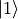. However, in addition to these two basic states, quantum bits can also be in a superposition state between them, i.e. 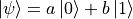 (where a and b are plural, 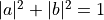). For example, 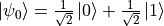 and 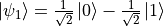 are both legitimate quantum states. We can also use the language of vectorization to represent the state of a quantum bit. If we make
and 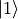. However, in addition to these two basic states, quantum bits can also be in a superposition state between them, i.e. 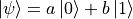 (where a and b are plural, 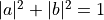). For example, 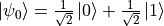 and 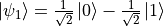 are both legitimate quantum states. We can also use the language of vectorization to represent the state of a quantum bit. If we make  ,
,  , then 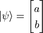,
, then 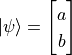,  , 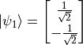.
, 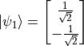.
At the same time, we can use the Bloch Sphere to graphically demonstrate the state of a single quantum bit. The topmost part of the sphere is and the bottommost part is and the unit vector from the origin to any point on the sphere can be a state of quantum bits.

Bloch Sphere (Bloch Sphere). Source of illustration¶
{kind=link}
It is worth noting in particular that although quantum bits have quite a few possible states, once we observe them, their states immediately collapse 2 into one of two fundamental states of and with probabilities of  and
and  , respectively.
, respectively.
quantum logic gate¶
In binary classical computers, we have logic gates such as AND (with), OR (or), NOT (not), etc. that transform the input bit state and output it. In quantum computers, we also have Quantum Logic Gates (or “quantum gates” for short) that transform and output quantum states. If we use the language of vectorization to represent quantum states, the quantum logic gate can be seen as a matrix that transforms the state vectors.
For example, the quantum non-gate can be expressed as  , so when we act the quantum non-gate on the fundamental state , we get 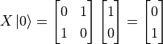. In fact, quantum non-gates
, so when we act the quantum non-gate on the fundamental state , we get 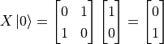. In fact, quantum non-gates  are equivalent to rotating a quantum state 180 degrees around the X axis on a Bloch sphere. and
are equivalent to rotating a quantum state 180 degrees around the X axis on a Bloch sphere. and  is on the X-axis, so no change). Quantum and gates and or gates 3 are slightly more complex due to the multiple quantum bits involved, but are equally achievable with matrices of greater size.
is on the X-axis, so no change). Quantum and gates and or gates 3 are slightly more complex due to the multiple quantum bits involved, but are equally achievable with matrices of greater size.
It may have occurred to some readers that since there are more states of a single quantum bit than and , then quantum logic gates as transformations of quantum bits can in fact be completely unrestricted to and from. In fact, any matrix 4 that meets certain conditions can serve as a quantum logic gate. For example, transforms that rotate quantum states around the X, Y and Z axes on the Bloch sphere 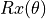,  , 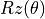 (where
, 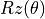 (where  is the angle of rotation and when
is the angle of rotation and when  is recorded as , math:Y, math:Z) are quantum logic gates. In addition, there is a quantum logic gate “Hadamard Gate”
is recorded as , math:Y, math:Z) are quantum logic gates. In addition, there is a quantum logic gate “Hadamard Gate”  that can convert quantum states from elementary to superposition states, which occupies an important place in many scenarios of quantum computing.
that can convert quantum states from elementary to superposition states, which occupies an important place in many scenarios of quantum computing.
Quantum Circuit¶
When we mark quantum bits, as well as quantum logic gates, sequentially on one or more parallel lines, they constitute a quantum circuit, or quantum circuit. For example, for the process we discussed in the previous section, using quantum non-gates to transform the fundamental state , we can write the quantum circuit as follows.
{kind=link}
In a quantum circuit, each horizontal line represents one quantum bit. The leftmost in the above diagram represents the initial state of a quantum bit. The X square in the middle represents the quantum non-gate and the dial symbol on the far right represents the measurement operation. The significance of this line is “to perform quantum non-gate operations on quantum bits whose initial state is 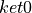 and to measure the transformed quantum bit state”. According to our discussion in the previous section, the transformed quantum bit state is the fundamental state , so we can expect the final measurement of this quantum circuit to be always 1.
Next, we consider replacing the quantum non-gate of the quantum circuit in the above figure with the Adama gate  .
.

Quantum line after replacing quantum non-gate with adama gate ¶
The matrix corresponding to the Adama gate is expressed as 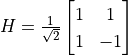, so we can calculate the transformed quantum state as 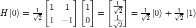 . This is a superposition state of and that collapses to a fundamental state after observation with probabilities of 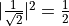. That is, the observation of this quantum circuit is similar to a coin toss. If 20 observations are made, the result for about 10 is and the result for 10 is .
Example: Create a simple circuit line using Cirq¶
Cirq is a Google-led open source quantum computing library that helps us easily build quantum circuits and simulate measurements (we’ll use it again in the next section on TensorFlow Quantum). Cirq is a Python library that can be installed using pip install cirq. The following code implements the two simple quantum circuits established in the previous section, with 20 simulated measurements each.
import cirq
q = cirq.LineQubit(0) # 实例化一个量子比特
simulator = cirq.Simulator() # 实例化一个模拟器
X_circuit = cirq.Circuit( # 建立一个包含量子非门和测量的量子线路
cirq.X(q),
cirq.measure(q)
)
print(X_circuit) # 在终端可视化输出量子线路
# 使用模拟器对该量子线路进行20次的模拟测量
result = simulator.run(X_circuit, repetitions=20)
print(result) # 输出模拟测量结果
H_circuit = cirq.Circuit( # 建立一个包含阿达马门和测量的量子线路
cirq.H(q),
cirq.measure(q)
)
print(H_circuit)
result = simulator.run(H_circuit, repetitions=20)
print(result)
The results are as follows.
0: -──X───M───
0=1111111111111111
0: ---H---M--..
0=00100111001111101100
It can be seen that the first measurement of the quantum circuit is always 1, and the second quantum state has 9 out of 20 measurements of 0 and 11 of 1 (if you run it a few more times, you will find that the probability of 0 and 1 appearing is close to 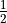). The results can be seen to be consistent with our analysis in the previous section.
Hybrid Quantum - Classic Machine Learning¶
This section introduces the basic concepts of hybrid quantum-classical machine learning and methods for building such models using TensorFlow Quantum.
In hybrid quantum-classical machine learning, we train hybrid quantum-classical models using quantum data sets. The first half of the hybrid quantum-classical model is the quantum model (i.e., the parameterized quantum circuit). The quantum model accepts the quantum data set as input, transforms the input using quantum gates, and then transforms it into classical data by measurement. The measured classical data is entered into the classical model and the loss value of the model is calculated using the regular loss function. Finally, the gradient of the model parameters is calculated and updated based on the value of the loss function. This process includes not only the parameters of the classical model, but also of the quantum model. The exact process is shown in the figure below.

Classical machine learning (above) vs. hybrid quantum-classical machine learning (below) process¶
TensorFlow Quantum is an open source library that is tightly integrated with TensorFlow Keras to quickly build hybrid quantum-classical machine learning models and can be installed using pip install tensorflow-quantum`.
The following examples are imported into TensorFlow, TensorFlow Quantum and Cirq by default using the following code.
import tensorflow as tf
import tensorflow_quantum as tfq
import cirq
recommended reading
Broughton, Michael, Guillaume Verdon, Trevor McCourt, Antonio J. Martinez, Jae Hyeon Yoo, Sergei V. Isakov, Philip Massey, et al. ” TensorFlow Quantum: A Software Framework for Quantum Machine Learning. ” ArXiv:2003.02989 [Cond-Mat, Physics:Quant-Ph], March 5, 2020. (TensorFlow Quantum White Paper)
Quantum data sets and quantum gates with parameters¶
Using supervised learning as an example, the classical data set consists of classical data and labels. Each item in the classical data is a vector composed of different features. We can write the classical dataset 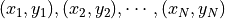 , where 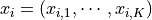 . A quantum data set is also made up of data and labels, and each item in the data is a quantum state. As an example of the quantum state of a single quantum bit in the previous section, we can write each data 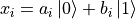 . In terms of concrete implementation, we can generate quantum data through quantum circuits. That is, each data 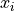 corresponds to a quantum circuit. For example, we can use Cirq to generate a set of quantum data using the following code.
q = cirq.GridQubit(0, 0)
q_data = []
for i in range(100):
x_i = cirq.Circuit(
cirq.rx(np.random.rand() * np.pi)(q)
)
q_data.append(x_i)
In this process, we use a quantum gate cirq.rx(angle)(q) with parameters. Unlike the quantum gate cirq.X(q) , cirq.H(q) , which we used earlier, this quantum gate has an additional parameter, angle , which represents the angle (radiances) of the rotation of the quantum bit q around the x-axis of the Bloch sphere. The above code generates 100 quantum data, each of which is randomly rotated around the x-axis of the Bloch sphere starting from the fundamental state 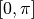 the quantum state transformed by the radians. Quantum datasets have applications in quite a few quantum-related fields such as chemistry, materials science, biology and drug discovery.
When we want to use the quantum data set as input to Keras, we can use the convert_to_tensor method of TensorFlow Quantum to convert the quantum data set to a tensor.
q_data = tfq.convert_to_tensor(q_data)
It is worth noting that when using quantum data sets as training data for the Keras model, the input type (dtype) for the Keras model needs to be tf.dtypes.string.
Parametric Quantum Lines (PQC)¶
When we use a quantum gate with a parameter when building a quantum circuit and the parameter is freely adjustable, we call such a quantum circuit a parametric quantum circuit.Cirq supports parametric quantum circuits in combination with SymPy, a symbolic arithmetic library under Python, for example
import sympy
theta = sympy.Symbol('theta')
q_model = cirq.Circuit(cirq.rx(theta)(q))
In the code above, we built the quantum circuit shown in the following figure. The quantum circuit can rotate any input quantum state 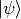 counterclockwise around the x-axis of the Bloch sphere :math:theta` degrees, where :math:theta` is the symbolic variable (i.e. parameter) declared using sympy.Symbol.

Example of a parametric quantum circuit¶
Embedding parametric quantum circuits into machine learning models¶
With TensorFlow Quantum, we can easily embed parametric quantum circuits into the Keras model as a Keras layer. For example, for the parameterized quantum circuit q_model created in the previous section, we can use tfq.layers.PQC as a Keras layer directly.
q_layer = tfq.layers.PQC(q_model, cirq.Z(q))
expectation_output = q_layer(q_data_input)
The first parameter of tfq.layers.PQC is a parameterized quantum circuit established using Cirq and the second parameter is the measurement method, which is measured here using ``cirq.Z(q)` on the Z axis of the Bloch sphere.
The above code can also be written directly.
expectation_output = tfq.players.PQC(q_model, cirq.Z(q))(q_data_input)
Example: biclassification of quantum data sets¶
In the following code, we first build a quantum data set where half of the data items are fundamental rotating counterclockwise around the x-axis of the Bloch sphere :math:frac{pi}{2}` radians (i.e. :math:frac{1}{sqrt{2}} ket{0} - frac{i}{sqrt{2}} ket{1}`) and the other half are :math:frac{3pi}{2}` radians (i.e. :math:frac{1}{sqrt{2}} ket{0} + frac{i}{sqrt{2}} ket{1}`). All data were added to the Gaussian noise rotated around the x,y axis with a standard deviation of 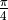. For this quantum data set, if measured directly without transformation, all the data would be randomly collapsed to the fundamental states and :math:ket{1}` with the same probability as a coin toss, making it indistinguishable.
To distinguish between these two types of data, we next build a quantum model that rotates the single-bit quantum state counterclockwise around the x-axis of the Bloch sphere arc. The measured values of the transformed quantum data are fed into the classical machine learning model of “Full Connected Layer + Softmax”, using cross-entropy as a loss function. The model training process automatically adjusts both the value of in the quantum model and the weights of the full connection layer, resulting in higher accuracy of the entire hybrid quantum-classical machine learning model.
import cirq
import sympy
import numpy as np
import tensorflow as tf
import tensorflow_quantum as tfq
q = cirq.GridQubit(0, 0)
# 准备量子数据集(q_data, label)
add_noise = lambda x: x + np.random.normal(0, 0.25 * np.pi)
q_data = tfq.convert_to_tensor(
[cirq.Circuit(
cirq.rx(add_noise(0.5 * np.pi))(q),
cirq.ry(add_noise(0))(q)
) for _ in range(100)] +
[cirq.Circuit(
cirq.rx(add_noise(1.5 * np.pi))(q),
cirq.ry(add_noise(0))(q)
) for _ in range(100)]
)
label = np.array([0] * 100 + [1] * 100)
# 建立参数化的量子线路（PQC）
theta = sympy.Symbol('theta')
q_model = cirq.Circuit(cirq.rx(theta)(q))
# 建立量子层和经典全连接层
q_layer = tfq.layers.PQC(q_model, cirq.Z(q))
dense_layer = tf.keras.layers.Dense(2, activation=tf.keras.activations.softmax)
# 使用Keras建立训练流程。量子数据首先通过PQC，然后通过经典的全连接模型
q_data_input = tf.keras.Input(shape=() ,dtype=tf.dtypes.string)
expectation_output = q_layer(q_data_input)
classifier_output = dense_layer(expectation_output)
model = tf.keras.Model(inputs=q_data_input, outputs=classifier_output)
# 编译模型，指定优化器、损失函数和评估指标，并进行训练
model.compile(
optimizer=tf.keras.optimizers.SGD(learning_rate=0.01),
loss=tf.keras.losses.sparse_categorical_crossentropy,
metrics=[tf.keras.metrics.sparse_categorical_accuracy]
)
model.fit(x=q_data, y=label, epochs=200)
# 输出量子层参数（即theta）的训练结果
print(q_layer.get_weights())
Output:.
..
200/200 [==========================================] - 0s 165us/sample - loss: 0.1586 - sparse_categorical_accuracy: 0.9500
[array([-1.5279944], dtype=float32)]
It can be seen that by training, the model can achieve 95% accuracy on the training set, 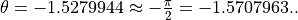 . When 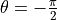 , it happens that the two types of data are close to the fundamental states and , respectively, so that the most easily distinguishable state is reached.
- 1
This manual has a line date of 2020 AD, so if you are from the future, please understand the limitations of the author’s time.
- 2
[#f1] The term “collapse” is mostly used in the Copenhagen interpretation of quantum observations, in addition to multiverse theory, etc. The word “collapse” is used here for convenience only.
- 3
[#f2] Actually the more common fundamental binary quantum gates are the “quantum choice non-gates” (CNOT) and the “exchange gates” (SWAP).
- 4
[#f3] This matrix is known as the “What-positive matrix” or the “You matrix”.